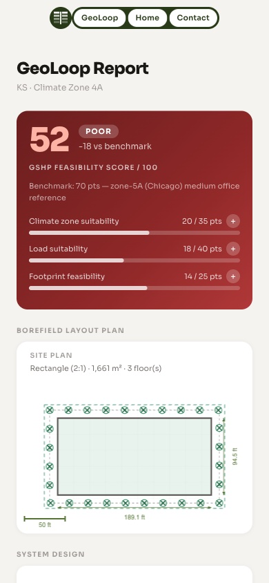

GeoLoop
GeoLoop answers one question for a building owner. Is a ground source heat pump feasible here? You enter a ZIP code and a building type. It returns a scored feasibility report in under 30 seconds.
- Seven stage pipeline: site soil data, EnergyPlus loads, ASHRAE borefield sizing, cost, strategy, report
- 840 EnergyPlus simulations behind the load tables
- 405 passing validation test cases